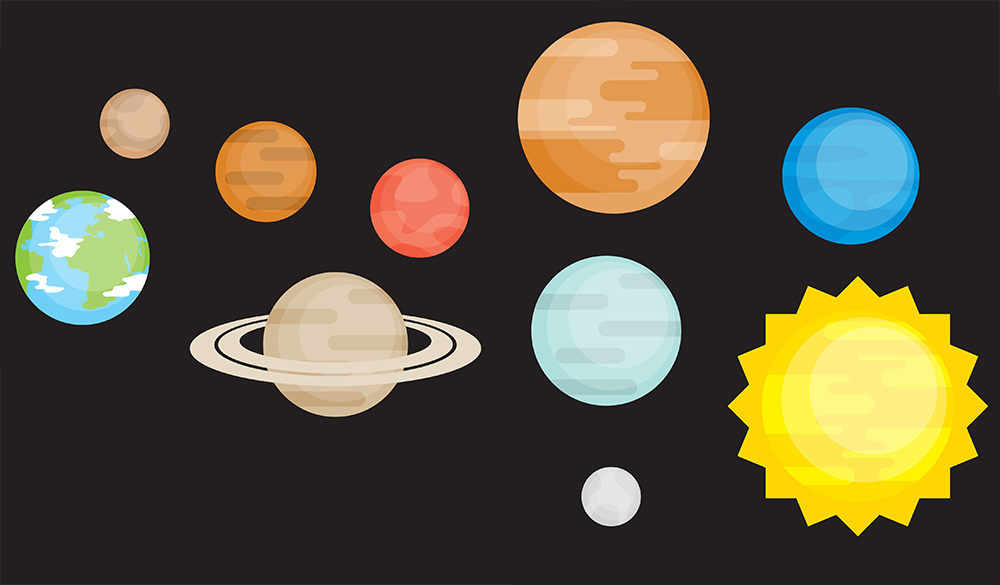

Front-end Web Scientist
Uppgift 3/4 - Northern SkillsAlla blogginlägg
Jag har försökt anpassa projektet till alla skärmstorlekar, men på grund av tidsbrist så har jag inte hunnit riktigt få i ordning på mobilanpassningen ännu. Så försök inte köra den på någon touch device, använd en dator i nuläget.
Denna uppgift gick ut på att skapa en infographic. Jag valde att skapa vårt solsystem med info om alla planeterna.
Detta blogginlägg kommer att vara uppdelat i två delar.
Del 2 kommer upp inom de närmsta dagarna.
Det började med att jag fick en idé; att jag skulle skapa vårt solsystem i javascript med planeterna i vektor (SVG) för att hålla bildkvalitén så crisp som möjligt.
Det första jag gjorde var att leta efter en gratis resource av SVG-planeter som jag kunde använda då jag själv inte är någon mästare när det kommer till att rita saker i vektorgrafik.
Jag hittade dessa planeter:

Källa: Flat planet vectors
Nästa del var att jag skulle få tag på någon bra rymdbakgrund att ha till planeterna, då slog det mig att jag hade sett en grym rymd-canvas-animation för några månader sedan. Jag lyckades till slut hitta den canvas-animationen jag sökte!
Rymd-canvas-animation: http://codepen.io/frexuz/pen/BvHsk
Jag gjorde ingen direkt mockup på hur projektet skulle se ut då det här var ett väldigt experimentellt projekt och jag ville testa mig fram till den perfekta lösningen.
Det började väldigt simpelt, men blev snabbt mer och mer avancerat, med fler och fler funktioner och resultatet blev långt över min förväntan! Jag trodde inte att det skulle bli så pass bra som det blev. Alla bitar bara fall på plats och det känns som att många av idéerna till hur jag skulle lösa de olika delarna av kodandet kom rent naturligt.
Det jag är mest stolt över med projektet är hur alla animationer sker.
Jag kommer att gå in mer på detaljer över hur det animeras i del två av blogginlägget som kommer att läggas upp inom några dagar.
Koden fär att göra denna typ av animation kommer att diskuteras i blogginlägget Del 2.
Grundtanken med animationen är att istället för att göra som t.ex. jQuery gör; ta animations-målet minus startvärdet och dela på steg som det skall ta att slutföra animationen och addera en del av det värdet varje frame tills animationen är klar, så sker denna typ av animation på ett mycket mer dynamiskt sätt.
jQuery gör (ungefär) såhär:
/*
a = startvärdet
b = målet
steps = så många gånger som värdet kommer att plussas innan animationen är över
*/
increment = (b – a) / steps;
// Varje step så ökas värdet såhär
a += incrementJag gör istället såhär:
/*
a = nuvarande värdet
b = värdet som a rör sig emot
divider = hur mycket värdet ska delas på innan det adderas, ju mer divider är, desto segare kommer animationen att gå emot sitt nya värde.
*/
// Vi förbestämmer inte hur mycket som ska ökas, utan vi ökar istället alltid en del av det som är kvar
// Varje step så ökas värdet såhär
a += (b - a) / dividerGenom att göra så, kan vi köra vår formell 60 gånger per sekund och a-värdet kommer hela tiden att röra sig emot b.
Vi kan ändra b när som helst och a kommer börja röra sig emot det nya b istället utan att det laggar till i animationen.
Detta kan vara ett rätt så svårt koncept att förstå sig på, men det skapar mycket mer dynamiska oförbestämda animationer.
Slutligen så måste jag säga att det här är helt klart det mest givande projektet jag har gjort.
Publicerad: 4/12 - 2015